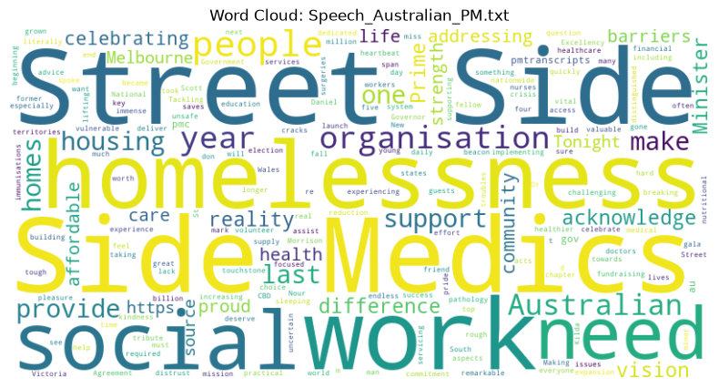
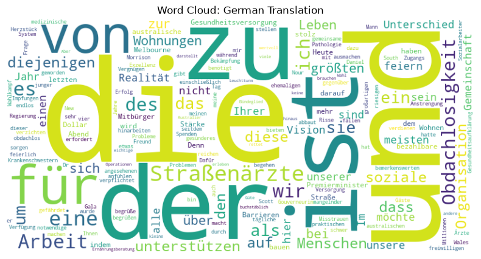

(Solution) Word clouds for Python-Programmers#
In this notebook we will instruct an AI-assistant to generate code for us to draw Wordcloud plots from a speech given and published by Anthony Albanese MP, Prime Minister of Australia, under CC-BY 4.0 license.
The AI-assistant Bob is built-in to Jupyter lab and can be instructed by starting a conversation with %%bob and then outlining below what needs to be done. Before we can use it, we need to initialize it. Here we use the LLM-server at the compute center ZIH at University of Technology TU Dresden.
# load secret API key. You must unpack the contents of api_key.zip
# into the same folder before going ahead.
from dotenv import load_dotenv
load_dotenv()
import os
from bia_bob import bob
bob.initialize(endpoint='https://llm.scads.ai/v1', model='openai/gpt-oss-120b', api_key=os.environ.get('SCADSAI_API_KEY'))
%%bob
Load "Speech_Australian_PM.txt" and draw a wordcloud of it.
This notebook may contain text, code and images generated by artificial intelligence.
Used model: claude-sonnet-5, vision model: claude-sonnet-5, fast_model: None, endpoint: None, bia-bob version: 0.36.2.. Do not enter sensitive or private information and verify generated contents according to good scientific practice. Read more: https://github.com/haesleinhuepf/bia-bob#disclaimer
Load the text file and generate a word cloud visualization from its content.
from wordcloud import WordCloud, STOPWORDS
import matplotlib.pyplot as plt
# Load text
with open("Speech_Australian_PM.txt", "r", encoding="utf-8") as f:
text = f.read()
# Generate word cloud
stopwords = set(STOPWORDS)
wordcloud = WordCloud(width=800, height=400, background_color="white", stopwords=stopwords).generate(text)
# Display
plt.figure(figsize=(10, 5))
plt.imshow(wordcloud, interpolation="bilinear")
plt.axis("off")
plt.title("Word Cloud: Speech_Australian_PM.txt")
plt.show()

%%bob
Write Python code that uses the OpenAI-API to translate the content of the file to German and draw a word-cloud of the translation.
As OpenAI-compatible server use "https://llm.scads.ai/v1" and use the API key stored in the environment variable "SCADSAI_API_KEY".
Translate the loaded text to German using an OpenAI-compatible API endpoint, then generate and display a word cloud from the translated text.
import os
from openai import OpenAI
# Set up client
client = OpenAI(
base_url="https://llm.scads.ai/v1",
api_key=os.environ["SCADSAI_API_KEY"]
)
# Translate text to German
response = client.chat.completions.create(
model="meta-llama/Llama-3.3-70B-Instruct",
messages=[
{"role": "system", "content": "You are a professional translator. Translate the given text to German, output only the translation."},
{"role": "user", "content": text}
]
)
translated_text = response.choices[0].message.content
# Generate word cloud from translated text
wordcloud_de = WordCloud(width=800, height=400, background_color="white").generate(translated_text)
# Display
plt.figure(figsize=(10, 5))
plt.imshow(wordcloud_de, interpolation="bilinear")
plt.axis("off")
plt.title("Word Cloud: German Translation")
plt.show()
